「교회를 사랑하는 건」 · 2026. 10. 23. 톤앤무드 스튜디오 사진 아래 두 줄 = 한 테이크 안에서 찍을 것 · 빨강 ~1:38 곡 처음부터 1:38까지(남자 보컬 혼자 부르는 구간) · 파랑 1:38~ 1:38부터 끝까지(다 같이 부르는 구간) 레일 테이크(R1~R6) 동안 1번 정면 카메라는 사람 없이 고정해서 계속 녹화
PART 1 · 레일 테이크레일 = 윤관(카메라) + 김창훈(밀기) · 한 테이크 = 레일 1장면 + 카메라 3대 3장면
R1정면 레일 · 앞→뒤 (달리 아웃)
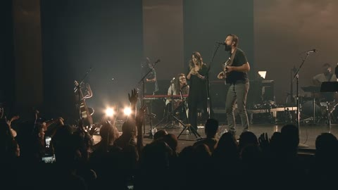
🛤 레일달리 아웃
~1:38 남자 보컬 MS → FULL 1:38~ 밴드 전체 + 빔
2 박완준측면
~1:38 남자 보컬 측면 실루엣 1:38~ 멤버 MS
3 문호준망원
~1:38 남자 보컬 CS 1:38~ 남자 보컬 CS (곡 전체)
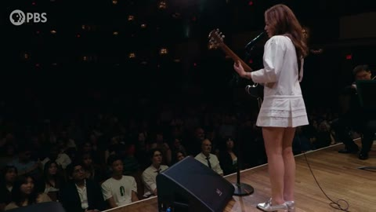
4 최영민뒤
~1:38 남자 보컬 뒷모습 OTS 1:38~ 오케스트라 FULL
R2정면 레일 · 뒤→앞 (달리 인)
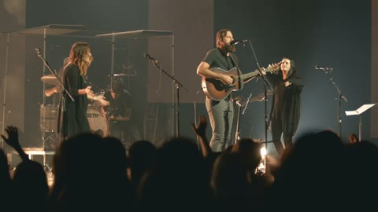
🛤 레일달리 인
~1:38 전체 → 남자 보컬 MS 1:38~ 보컬 TWO
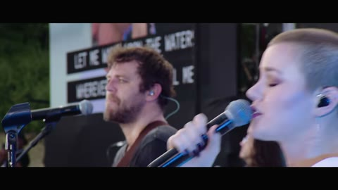
2 박완준측면
~1:38 남자 보컬 FULL 측면 1:38~ 남·여 보컬 TWO
3 문호준망원
~1:38 남자 보컬 입·손 디테일 1:38~ 여자 보컬 CS
4 최영민오케
~1:38 오케스트라 실루엣 1:38~ 스트링 MS
R3좌측 레일 · 좌→우
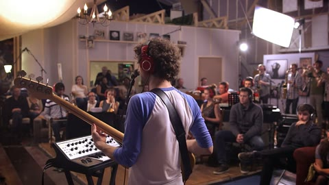
🛤 레일트래킹
~1:38 남자 보컬 옆을 지나가며 1:38~ 멤버 순서대로 훑기
2 박완준반대편
~1:38 남자 보컬 MS 반대쪽 1:38~ 기타·건반 HAND
3 문호준망원
~1:38 남자 보컬 CS 1:38~ 드럼 MFS
4 최영민오케
~1:38 1:07 조명 업 순간 1:38~ 브라스 CS
R4우측 레일 · 우→좌
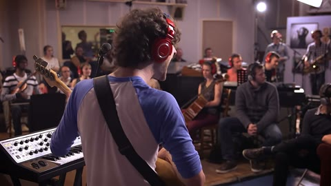
🛤 레일트래킹
~1:38 남자 보컬 옆을 지나가며 1:38~ 멤버 훑기 (반대 방향)
2 박완준오케 쪽
~1:38 남자 보컬 OTS 1:38~ 베이스 CS
3 문호준망원
~1:38 남자 보컬 CS 다른 각도 1:38~ 기타 HAND
4 최영민오케
~1:38 스트링 활 HAND 1:38~ 마칭 스네어 HAND
R5좌측 레일 · 피사체 고정 아크
🛤 레일아크
~1:38 남자 보컬 중심 아크 1:38~ 남자 보컬 중심 아크
2 박완준측면
~1:38 남자 보컬 MS 1:38~ 여자 보컬 MS
3 문호준망원
~1:38 남자 보컬 CS 리액션 1:38~ 남자 보컬 CS
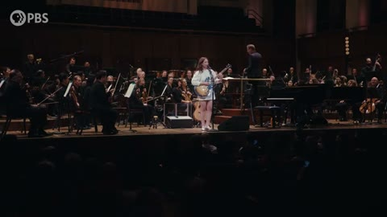
4 최영민오케
~1:38 오케스트라 FULL (배경) 1:38~ 오케스트라 FULL
R6클라이맥스만 반복 (3:11~3:38) · 3~4회
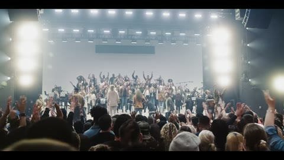
🛤 레일달리 아웃
~1:38 — 1:38~ MS → 전체 + 그리드
2 박완준측면
~1:38 — 1:38~ 그리드 앞 멤버 실루엣
3 문호준망원
~1:38 — 1:38~ 남자 보컬 CS 리액션
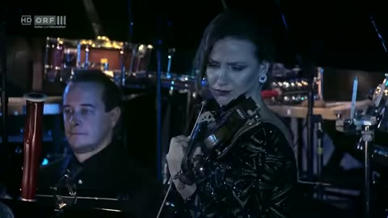
4 최영민오케
~1:38 — 1:38~ 오케스트라 리액션
PART 2 · 기본 앵글 (전원 트라이)레일 접고 5명 모두 카메라 · 풀 테이크 · 한 테이크 = 5장면
T1전체 사이즈
1 김창훈정면
~1:38 남자 보컬 FULL 1:38~ 밴드+오케 FULL
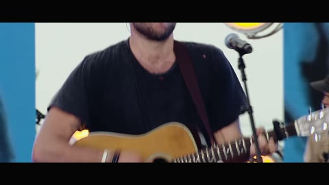
2 박완준측면
~1:38 남자 보컬 MS 1:38~ 멤버 MS
3 문호준망원
~1:38 남자 보컬 CS 1:38~ 남자 보컬 CS
4 최영민오케
~1:38 오케스트라 실루엣 1:38~ 오케스트라 FULL
5 윤관로우
~1:38 남자 보컬 FULL 로우 1:38~ 밴드 FULL 로우
T2보컬
1 김창훈정면
~1:38 남자 보컬 MS 1:38~ 보컬 TWO
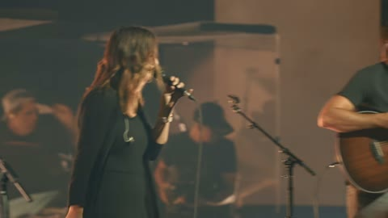
2 박완준측면
~1:38 남자 보컬 측면 CS 1:38~ 여자 보컬 MS
3 문호준망원
~1:38 남자 보컬 CS 1:38~ 여자 보컬 CS
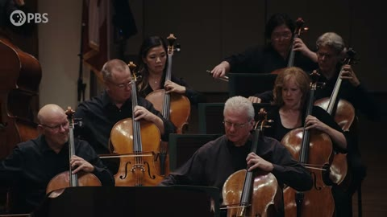
4 최영민오케
~1:38 스트링 실루엣 1:38~ 스트링 MS
5 윤관뒤
~1:38 남자 보컬 OTS 1:38~ 남·녀 TWO
T3악기 HAND
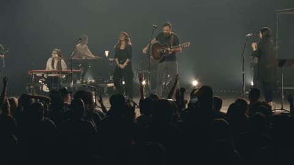
1 김창훈정면
~1:38 남자 보컬 FULL 1:38~ 밴드 FULL
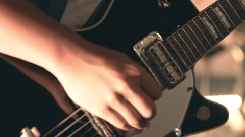
2 박완준기타
~1:38 남자 보컬 손·마이크 1:38~ 기타 HAND
3 문호준건반
~1:38 남자 보컬 CS 1:38~ 건반 HAND
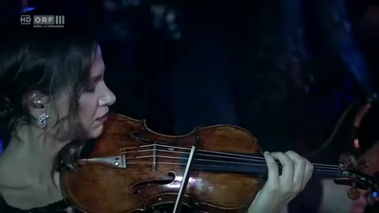
4 최영민현악
~1:38 바이올린 실루엣 1:38~ 바이올린 HAND
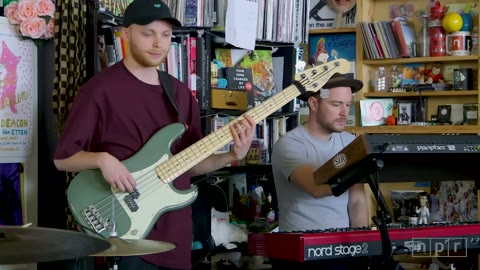
5 윤관베이스
~1:38 남자 보컬 MS 1:38~ 베이스 CS
T4리듬 · 관악
1 김창훈정면
~1:38 남자 보컬 MS 1:38~ 드럼 MFS
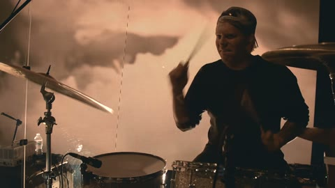
2 박완준드럼
~1:38 남자 보컬 측면 1:38~ 드럼 HAND
3 문호준망원
~1:38 남자 보컬 CS 1:38~ 마칭 스네어 HAND (2절 B)
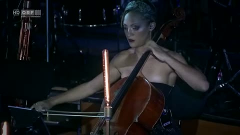
4 최영민첼로
~1:38 첼로 실루엣 1:38~ 첼로 CS
5 윤관관악
~1:38 남자 보컬 OTS 1:38~ 브라스 CS
T5리액션 · 하이
1 김창훈정면
~1:38 남자 보컬 CS 1:38~ 전체 와이드
2 박완준측면
~1:38 남자 보컬 손 디테일 1:38~ 멤버 리액션
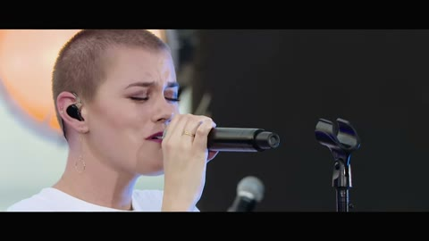
3 문호준망원
~1:38 남자 보컬 CS 1:38~ 남자 보컬 CS
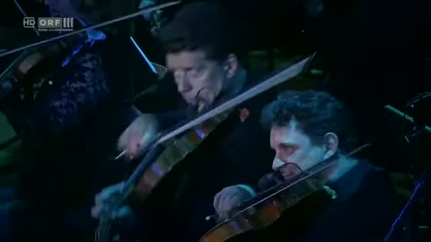
4 최영민오케
~1:38 오케스트라 어둡게 1:38~ 오케스트라 리액션
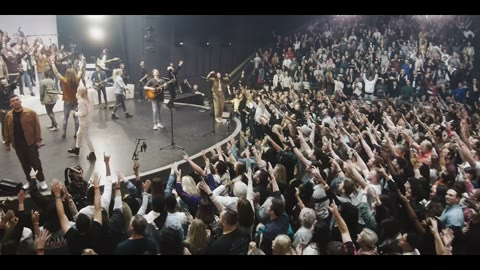
5 윤관하이
~1:38 무대 하이 앵글 1:38~ 전체 하이 앵글
PART 3 · 창의 앵글 · 인서트해당 구간만 짧게 · 5대가 나눠서 동시에 2~3개씩
C12:41~3:11
오케스트라 너머 보컬 — 활·첼로를 앞에 흐리게 (FG)
C21:07~1:38
브라스 벨 너머 — 벨을 크게, 너머로 무대
C31:07~1:38
로우 앵글 — 바닥에서 위로 — "고갤 들어"
C43:11~3:38
하이 앵글 — 사다리·선반에서 내려다보기
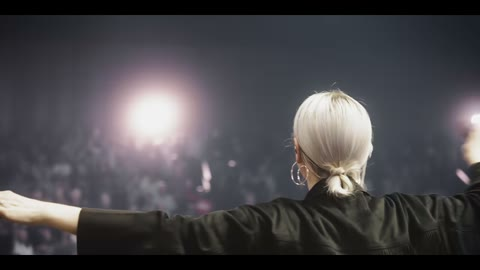
C53:11~3:38
역방향 — 빔 쪽에서 멤버 뒷모습 + 현장
C63:11~3:38
실루엣 — 그리드 앞 역광 실루엣
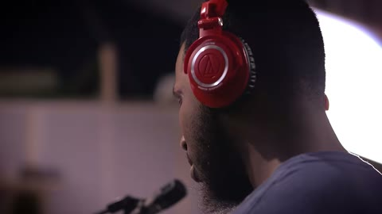
C70:14~1:07
랙포커스 — 손 → 남자 보컬 얼굴 / 멤버 → 그리드
C82:14~2:41
더치 — 2절 B 빌드업, 살짝 기울기
C93:11~3:38
리액션 — 그리드를 올려다보는 연주자
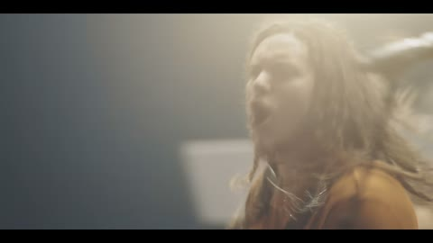
C103:11~3:38
슬로모션 — 60~120fps · 가이드 2배속
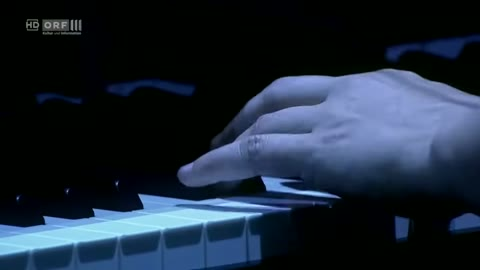
INS남는 시간
인서트 — 손·악기·마이크·빔 디테일
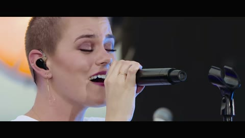
END3:53~4:17
엔딩 — 남자 보컬 마지막 한 줄 CS
· 순서: R1~R5 풀 테이크 → R6 클라이맥스 반복 → T1~T5 풀 테이크 → 창의 앵글·인서트 → 클라이맥스 최종 · 풀 테이크 1회 약 6~7분 · 총 약 2시간 5분 (9:30~12:00)
· 1:07 오케스트라 조명 업 / 3:11 그리드 큐는 음원 타임코드로 리허설 · 테이크 시작 전 "R3, 레일 좌측" 콜 + 슬레이트 · 전 카메라 프레임레이트·셔터·5600K 통일
· 참고 이미지: 해외 라이브 영상(Snarky Puppy · Laufey&NSO · Elevation · Maverick City · Hillsong UNITED · Helser · Hans Zimmer Live · Lewis Capaldi 등) + HISPLAN 「NOEL NOEL」·「거룩하신 전능의 주」·「Dear Miracle」·「사랑을 퍼뜨리자」 — 앵글·사이즈 참고용 (브라스 장면은 비슷한 장면으로 대체)